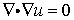
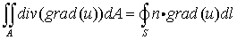
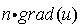
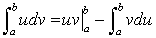
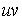

|
Natural Boundary Conditions |

  
|
|
Natural Boundary Conditions |
|
The term "natural boundary condition" usually arises in the calculus of variations, and since the finite element method is fundamentally one of minimization of an error functional, the term arises also in this context.
The term has a much more intuitive interpretation, however, and it is this which we will try to present.
Consider a Laplace equation,

The Divergence Theorem says that the integral of this equation over all space is equal merely to the integral over the bounding surface of the normal component of the flux,

(we have presented the equation in two dimensions, but it is valid in three dimensions as well).
The surface value of  is in fact the "natural boundary condition" for the Laplace (and Poisson) equation. It is the way in which the system inside interacts with the system outside. It is the (negative of the) flux of the quantity u that crosses the system boundary.
The Divergence Theorem is a particular manifestation of the more general process of Integration by Parts. You will remember the basic rule,

The term  is evaluated at the ends of the integration interval and gives rise to surface terms. Applied to the integration of a divergence, integration by parts produces the Divergence Theorem.
FlexPDE applies integration by parts to all terms of the partial differential equations that contain second-order derivatives of the system variables. In the Laplace equation, of course, this means the only term that appears.
In order for a solution of the Laplace equation (for example) to be achieved, one must specify at all points of the boundary either the value of the variable (in this case,  ) or the value of .
) or the value of .
In the notation of FlexPDE,
VALUE(u)=u1 supplies the former, and
NATURAL(u)=F supplies the latter.
In other words,
The NATURAL boundary condition statement in FlexPDE supplies the value of the surface flux, as that flux is defined by the integration of the second-order terms of the PDE by parts. The default boundary condition for FlexPDE is NATURAL(VARIABLE)=0.
Note: On an internal boundary the NATURAL defines the difference in flux between the two adjacent regions, producing a source or sink at that boundary.
Consistent with our discussion of nonlinear equations, the value given for the surface flux may be a nonlinear value.
The radiation loss from a hot body, for example, is proportional to the fourth power of temperature, and the statement
NATURAL(u) = -k*u^4
is a perfectly legal boundary condition for the Laplace equation in FlexPDE.